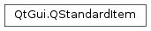

QStandardItem¶
Synopsis¶
Functions¶
- def
accessibleDescription() - def
accessibleText() - def
appendColumn(items) - def
appendRow(item) - def
appendRow(items) - def
appendRows(items) - def
background() - def
checkState() - def
child(row[, column=0]) - def
column() - def
columnCount() - def
emitDataChanged() - def
flags() - def
font() - def
foreground() - def
hasChildren() - def
icon() - def
index() - def
insertColumn(column, items) - def
insertColumns(column, count) - def
insertRow(row, item) - def
insertRow(row, items) - def
insertRows(row, count) - def
insertRows(row, items) - def
isAutoTristate() - def
isCheckable() - def
isDragEnabled() - def
isDropEnabled() - def
isEditable() - def
isEnabled() - def
isSelectable() - def
isTristate() - def
isUserTristate() - def
model() - def
parent() - def
removeColumn(column) - def
removeColumns(column, count) - def
removeRow(row) - def
removeRows(row, count) - def
row() - def
rowCount() - def
setAccessibleDescription(accessibleDescription) - def
setAccessibleText(accessibleText) - def
setAutoTristate(tristate) - def
setBackground(brush) - def
setCheckState(checkState) - def
setCheckable(checkable) - def
setChild(row, column, item) - def
setChild(row, item) - def
setColumnCount(columns) - def
setDragEnabled(dragEnabled) - def
setDropEnabled(dropEnabled) - def
setEditable(editable) - def
setEnabled(enabled) - def
setFlags(flags) - def
setFont(font) - def
setForeground(brush) - def
setIcon(icon) - def
setRowCount(rows) - def
setSelectable(selectable) - def
setSizeHint(sizeHint) - def
setStatusTip(statusTip) - def
setText(text) - def
setTextAlignment(textAlignment) - def
setToolTip(toolTip) - def
setTristate(tristate) - def
setUserTristate(tristate) - def
setWhatsThis(whatsThis) - def
sizeHint() - def
sortChildren(column[, order=Qt.AscendingOrder]) - def
statusTip() - def
takeChild(row[, column=0]) - def
takeColumn(column) - def
takeRow(row) - def
text() - def
textAlignment() - def
toolTip() - def
whatsThis()
Detailed Description¶
The
PySide2.QtGui.QStandardItemclass provides an item for use with thePySide2.QtGui.QStandardItemModelclass.Items usually contain text, icons, or checkboxes.
Each item can have its own background brush which is set with the
PySide2.QtGui.QStandardItem.setBackground()function. The current background brush can be found withPySide2.QtGui.QStandardItem.background(). The text label for each item can be rendered with its own font and brush. These are specified with thePySide2.QtGui.QStandardItem.setFont()andPySide2.QtGui.QStandardItem.setForeground()functions, and read withPySide2.QtGui.QStandardItem.font()andPySide2.QtGui.QStandardItem.foreground().By default, items are enabled, editable, selectable, checkable, and can be used both as the source of a drag and drop operation and as a drop target. Each item’s flags can be changed by calling
PySide2.QtGui.QStandardItem.setFlags(). Checkable items can be checked and unchecked with thePySide2.QtGui.QStandardItem.setCheckState()function. The correspondingPySide2.QtGui.QStandardItem.checkState()function indicates whether the item is currently checked.You can store application-specific data in an item by calling
PySide2.QtGui.QStandardItem.setData().Each item can have a two-dimensional table of child items. This makes it possible to build hierarchies of items. The typical hierarchy is the tree, in which case the child table is a table with a single column (a list).
The dimensions of the child table can be set with
PySide2.QtGui.QStandardItem.setRowCount()andPySide2.QtGui.QStandardItem.setColumnCount(). Items can be positioned in the child table withPySide2.QtGui.QStandardItem.setChild(). Get a pointer to a child item withPySide2.QtGui.QStandardItem.child(). New rows and columns of children can also be inserted withPySide2.QtGui.QStandardItem.insertRow()andPySide2.QtGui.QStandardItem.insertColumn(), or appended withPySide2.QtGui.QStandardItem.appendRow()andPySide2.QtGui.QStandardItem.appendColumn(). When using the append and insert functions, the dimensions of the child table will grow as needed.An existing row of children can be removed with
PySide2.QtGui.QStandardItem.removeRow()orPySide2.QtGui.QStandardItem.takeRow(); correspondingly, a column can be removed withPySide2.QtGui.QStandardItem.removeColumn()orPySide2.QtGui.QStandardItem.takeColumn().An item’s children can be sorted by calling
PySide2.QtGui.QStandardItem.sortChildren().
Subclassing¶
When subclassing
PySide2.QtGui.QStandardItemto provide custom items, it is possible to define new types for them so that they can be distinguished from the base class. ThePySide2.QtGui.QStandardItem.type()function should be reimplemented to return a new type value equal to or greater thanUserType.Reimplement
PySide2.QtGui.QStandardItem.data()andPySide2.QtGui.QStandardItem.setData()if you want to perform custom handling of data queries and/or control how an item’s data is represented.Reimplement
PySide2.QtGui.QStandardItem.clone()if you wantPySide2.QtGui.QStandardItemModelto be able to create instances of your custom item class on demand (seeQStandardItemModel.setItemPrototype()).Reimplement
PySide2.QtGui.QStandardItem.read()andPySide2.QtGui.QStandardItem.write()if you want to control how items are represented in their serialized form.Reimplement
PySide2.QtGui.QStandardItem.operator<()if you want to control the semantics of item comparison.PySide2.QtGui.QStandardItem.operator<()determines the sorted order when sorting items withPySide2.QtGui.QStandardItem.sortChildren()or withQStandardItemModel.sort().
-
class
PySide2.QtGui.QStandardItem¶ -
class
PySide2.QtGui.QStandardItem(icon, text) -
class
PySide2.QtGui.QStandardItem(other) -
class
PySide2.QtGui.QStandardItem(text) -
class
PySide2.QtGui.QStandardItem(rows[, columns=1]) Parameters: - columns –
PySide2.QtCore.int - icon –
PySide2.QtGui.QIcon - other –
PySide2.QtGui.QStandardItem - rows –
PySide2.QtCore.int - text – unicode
Constructs an item.
Constructs an item with the given
iconandtext.Constructs a copy of
other. Note thatPySide2.QtGui.QStandardItem.model()is not copied.This function is useful when reimplementing
PySide2.QtGui.QStandardItem.clone().Constructs an item with the given
text.Constructs an item with
rowsrows andcolumnscolumns of child items.- columns –
-
PySide2.QtGui.QStandardItem.ItemType¶ This enum describes the types that are used to describe standard items.
Constant Description QStandardItem.Type The default type for standard items. QStandardItem.UserType The minimum value for custom types. Values below are reserved by Qt. You can define new user types in
PySide2.QtGui.QStandardItemsubclasses to ensure that custom items are treated specially; for example, when items are sorted.See also
-
PySide2.QtGui.QStandardItem.accessibleDescription()¶ Return type: unicode Returns the item’s accessible description.
The accessible description is used by assistive technologies (i.e. for users who cannot use conventional means of interaction).
-
PySide2.QtGui.QStandardItem.accessibleText()¶ Return type: unicode Returns the item’s accessible text.
The accessible text is used by assistive technologies (i.e. for users who cannot use conventional means of interaction).
-
PySide2.QtGui.QStandardItem.appendColumn(items)¶ Parameters: items – Appends a column containing
items. If necessary, the row count is increased to the size ofitems.
-
PySide2.QtGui.QStandardItem.appendRow(items)¶ Parameters: items –
-
PySide2.QtGui.QStandardItem.appendRow(item) Parameters: item – PySide2.QtGui.QStandardItemThis is an overloaded function.
Appends a row containing
item.When building a list or a tree that has only one column, this function provides a convenient way to append a single new item.
-
PySide2.QtGui.QStandardItem.appendRows(items)¶ Parameters: items – Appends rows containing
items. The column count will not change.
-
PySide2.QtGui.QStandardItem.background()¶ Return type: PySide2.QtGui.QBrushReturns the brush used to render the item’s background.
-
PySide2.QtGui.QStandardItem.checkState()¶ Return type: PySide2.QtCore.Qt.CheckStateReturns the checked state of the item.
-
PySide2.QtGui.QStandardItem.child(row[, column=0])¶ Parameters: - row –
PySide2.QtCore.int - column –
PySide2.QtCore.int
Return type: Returns the child item at (
row,column) if one has been set; otherwise returns 0.- row –
-
PySide2.QtGui.QStandardItem.clone()¶ Return type: PySide2.QtGui.QStandardItemReturns a copy of this item. The item’s children are not copied.
When subclassing
PySide2.QtGui.QStandardItem, you can reimplement this function to providePySide2.QtGui.QStandardItemModelwith a factory that it can use to create new items on demand.See also
QStandardItemModel.setItemPrototype()PySide2.QtGui.QStandardItem.operator=()
-
PySide2.QtGui.QStandardItem.column()¶ Return type: PySide2.QtCore.intReturns the column where the item is located in its parent’s child table, or -1 if the item has no parent.
-
PySide2.QtGui.QStandardItem.columnCount()¶ Return type: PySide2.QtCore.intReturns the number of child item columns that the item has.
-
PySide2.QtGui.QStandardItem.data([role=Qt.UserRole + 1])¶ Parameters: role – PySide2.QtCore.intReturn type: object Returns the item’s data for the given
role, or an invalidPySide2.QtCore.QVariantif there is no data for the role.Note
The default implementation treats
Qt.EditRoleandQt.DisplayRoleas referring to the same data.
-
PySide2.QtGui.QStandardItem.emitDataChanged()¶ Causes the model associated with this item to emit a
PySide2.QtCore.QAbstractItemModel.dataChanged()() signal for this item.You normally only need to call this function if you have subclassed
PySide2.QtGui.QStandardItemand reimplementedPySide2.QtGui.QStandardItem.data()and/orPySide2.QtGui.QStandardItem.setData().
-
PySide2.QtGui.QStandardItem.flags()¶ Return type: PySide2.QtCore.Qt.ItemFlagsReturns the item flags for the item.
The item flags determine how the user can interact with the item.
By default, items are enabled, editable, selectable, checkable, and can be used both as the source of a drag and drop operation and as a drop target.
-
PySide2.QtGui.QStandardItem.font()¶ Return type: PySide2.QtGui.QFontReturns the font used to render the item’s text.
-
PySide2.QtGui.QStandardItem.foreground()¶ Return type: PySide2.QtGui.QBrushReturns the brush used to render the item’s foreground (e.g. text).
-
PySide2.QtGui.QStandardItem.hasChildren()¶ Return type: PySide2.QtCore.boolReturns
trueif this item has any children; otherwise returnsfalse.
-
PySide2.QtGui.QStandardItem.icon()¶ Return type: PySide2.QtGui.QIconReturns the item’s icon.
See also
PySide2.QtGui.QStandardItem.setIcon()PySide2.QtWidgets.QAbstractItemView.iconSize()
-
PySide2.QtGui.QStandardItem.index()¶ Return type: PySide2.QtCore.QModelIndexReturns the
PySide2.QtCore.QModelIndexassociated with this item.When you need to invoke item functionality in a
PySide2.QtCore.QModelIndex-based API (e.g.PySide2.QtWidgets.QAbstractItemView), you can call this function to obtain an index that corresponds to the item’s location in the model.If the item is not associated with a model, an invalid
PySide2.QtCore.QModelIndexis returned.
-
PySide2.QtGui.QStandardItem.insertColumn(column, items)¶ Parameters: - column –
PySide2.QtCore.int - items –
Inserts a column at
columncontainingitems. If necessary, the row count is increased to the size ofitems.- column –
-
PySide2.QtGui.QStandardItem.insertColumns(column, count)¶ Parameters: - column –
PySide2.QtCore.int - count –
PySide2.QtCore.int
Inserts
countcolumns of child items at columncolumn.- column –
-
PySide2.QtGui.QStandardItem.insertRow(row, items)¶ Parameters: - row –
PySide2.QtCore.int - items –
- row –
-
PySide2.QtGui.QStandardItem.insertRow(row, item) Parameters: - row –
PySide2.QtCore.int - item –
PySide2.QtGui.QStandardItem
This is an overloaded function.
Inserts a row at
rowcontainingitem.When building a list or a tree that has only one column, this function provides a convenient way to insert a single new item.
- row –
-
PySide2.QtGui.QStandardItem.insertRows(row, items)¶ Parameters: - row –
PySide2.QtCore.int - items –
- row –
-
PySide2.QtGui.QStandardItem.insertRows(row, count) Parameters: - row –
PySide2.QtCore.int - count –
PySide2.QtCore.int
Inserts
countrows of child items at rowrow.- row –
-
PySide2.QtGui.QStandardItem.isAutoTristate()¶ Return type: PySide2.QtCore.boolReturns whether the item is tristate and is controlled by
PySide2.QtWidgets.QTreeWidget.The default value is false.
-
PySide2.QtGui.QStandardItem.isCheckable()¶ Return type: PySide2.QtCore.boolReturns whether the item is user-checkable.
The default value is false.
-
PySide2.QtGui.QStandardItem.isDragEnabled()¶ Return type: PySide2.QtCore.boolReturns whether the item is drag enabled. An item that is drag enabled can be dragged by the user.
The default value is true.
Note that item dragging must be enabled in the view for dragging to work; see
QAbstractItemView.dragEnabled.
-
PySide2.QtGui.QStandardItem.isDropEnabled()¶ Return type: PySide2.QtCore.boolReturns whether the item is drop enabled. When an item is drop enabled, it can be used as a drop target.
The default value is true.
-
PySide2.QtGui.QStandardItem.isEditable()¶ Return type: PySide2.QtCore.boolReturns whether the item can be edited by the user.
When an item is editable (and enabled), the user can edit the item by invoking one of the view’s edit triggers; see
QAbstractItemView.editTriggers.The default value is true.
-
PySide2.QtGui.QStandardItem.isEnabled()¶ Return type: PySide2.QtCore.boolReturns whether the item is enabled.
When an item is enabled, the user can interact with it. The possible types of interaction are specified by the other item flags, such as
PySide2.QtGui.QStandardItem.isEditable()andPySide2.QtGui.QStandardItem.isSelectable().The default value is true.
-
PySide2.QtGui.QStandardItem.isSelectable()¶ Return type: PySide2.QtCore.boolReturns whether the item is selectable by the user.
The default value is true.
-
PySide2.QtGui.QStandardItem.isTristate()¶ Return type: PySide2.QtCore.boolUse
QStandardItem.isAutoTristate()instead. For a tristate checkbox that the user can change between all three states, useQStandardItem.isUserTristate()instead.
-
PySide2.QtGui.QStandardItem.isUserTristate()¶ Return type: PySide2.QtCore.boolReturns whether the item is tristate; that is, if it’s checkable with three separate states and the user can cycle through all three states.
The default value is false.
-
PySide2.QtGui.QStandardItem.model()¶ Return type: PySide2.QtGui.QStandardItemModelReturns the
PySide2.QtGui.QStandardItemModelthat this item belongs to.If the item is not a child of another item that belongs to the model, this function returns 0.
See also
-
PySide2.QtGui.QStandardItem.parent()¶ Return type: PySide2.QtGui.QStandardItemReturns the item’s parent item, or 0 if the item has no parent.
Note
For toplevel items returns 0. To receive toplevel item’s parent use
QStandardItemModel.invisibleRootItem()instead.
-
PySide2.QtGui.QStandardItem.read(in)¶ Parameters: in – PySide2.QtCore.QDataStreamReads the item from stream
in. Only the data and flags of the item are read, not the child items.See also
-
PySide2.QtGui.QStandardItem.removeColumn(column)¶ Parameters: column – PySide2.QtCore.intRemoves the given
column. The items that were in the column are deleted.
-
PySide2.QtGui.QStandardItem.removeColumns(column, count)¶ Parameters: - column –
PySide2.QtCore.int - count –
PySide2.QtCore.int
Removes
countcolumns at columncolumn. The items that were in those columns are deleted.- column –
-
PySide2.QtGui.QStandardItem.removeRow(row)¶ Parameters: row – PySide2.QtCore.intRemoves the given
row. The items that were in the row are deleted.
-
PySide2.QtGui.QStandardItem.removeRows(row, count)¶ Parameters: - row –
PySide2.QtCore.int - count –
PySide2.QtCore.int
Removes
countrows at rowrow. The items that were in those rows are deleted.- row –
-
PySide2.QtGui.QStandardItem.row()¶ Return type: PySide2.QtCore.intReturns the row where the item is located in its parent’s child table, or -1 if the item has no parent.
-
PySide2.QtGui.QStandardItem.rowCount()¶ Return type: PySide2.QtCore.intReturns the number of child item rows that the item has.
-
PySide2.QtGui.QStandardItem.setAccessibleDescription(accessibleDescription)¶ Parameters: accessibleDescription – unicode Sets the item’s accessible description to the string specified by
accessibleDescription.The accessible description is used by assistive technologies (i.e. for users who cannot use conventional means of interaction).
-
PySide2.QtGui.QStandardItem.setAccessibleText(accessibleText)¶ Parameters: accessibleText – unicode Sets the item’s accessible text to the string specified by
accessibleText.The accessible text is used by assistive technologies (i.e. for users who cannot use conventional means of interaction).
-
PySide2.QtGui.QStandardItem.setAutoTristate(tristate)¶ Parameters: tristate – PySide2.QtCore.boolDetermines that the item is tristate and controlled by
PySide2.QtWidgets.QTreeWidgetiftristateistrue. This enables automatic management of the state of parent items inPySide2.QtWidgets.QTreeWidget(checked if all children are checked, unchecked if all children are unchecked, or partially checked if only some children are checked).
-
PySide2.QtGui.QStandardItem.setBackground(brush)¶ Parameters: brush – PySide2.QtGui.QBrushSets the item’s background brush to the specified
brush.
-
PySide2.QtGui.QStandardItem.setCheckState(checkState)¶ Parameters: checkState – PySide2.QtCore.Qt.CheckStateSets the check state of the item to be
state.
-
PySide2.QtGui.QStandardItem.setCheckable(checkable)¶ Parameters: checkable – PySide2.QtCore.boolSets whether the item is user-checkable. If
checkableis true, the item can be checked by the user; otherwise, the user cannot check the item.The item delegate will render a checkable item with a check box next to the item’s text.
-
PySide2.QtGui.QStandardItem.setChild(row, column, item)¶ Parameters: - row –
PySide2.QtCore.int - column –
PySide2.QtCore.int - item –
PySide2.QtGui.QStandardItem
Sets the child item at (
row,column) toitem. This item (the parent item) takes ownership ofitem. If necessary, the row count and column count are increased to fit the item.Note
Passing a null pointer as
itemremoves the item.See also
- row –
-
PySide2.QtGui.QStandardItem.setChild(row, item) Parameters: - row –
PySide2.QtCore.int - item –
PySide2.QtGui.QStandardItem
This is an overloaded function.
Sets the child at
rowtoitem.- row –
-
PySide2.QtGui.QStandardItem.setColumnCount(columns)¶ Parameters: columns – PySide2.QtCore.intSets the number of child item columns to
columns. If this is less thanPySide2.QtGui.QStandardItem.columnCount(), the data in the unwanted columns is discarded.
-
PySide2.QtGui.QStandardItem.setData(value[, role=Qt.UserRole + 1])¶ Parameters: - value – object
- role –
PySide2.QtCore.int
Sets the item’s data for the given
roleto the specifiedvalue.If you subclass
PySide2.QtGui.QStandardItemand reimplement this function, your reimplementation should callPySide2.QtGui.QStandardItem.emitDataChanged()if you do not call the base implementation of . This will ensure that e.g. views using the model are notified of the changes.Note
The default implementation treats
Qt.EditRoleandQt.DisplayRoleas referring to the same data.See also
Qt.ItemDataRolePySide2.QtGui.QStandardItem.data()PySide2.QtGui.QStandardItem.setFlags()
-
PySide2.QtGui.QStandardItem.setDragEnabled(dragEnabled)¶ Parameters: dragEnabled – PySide2.QtCore.boolSets whether the item is drag enabled. If
dragEnabledis true, the item can be dragged by the user; otherwise, the user cannot drag the item.Note that you also need to ensure that item dragging is enabled in the view; see
QAbstractItemView.dragEnabled.
-
PySide2.QtGui.QStandardItem.setDropEnabled(dropEnabled)¶ Parameters: dropEnabled – PySide2.QtCore.boolSets whether the item is drop enabled. If
dropEnabledis true, the item can be used as a drop target; otherwise, it cannot.Note that you also need to ensure that drops are enabled in the view; see
QWidget.acceptDrops(); and that the model supports the desired drop actions; seeQAbstractItemModel.supportedDropActions().
-
PySide2.QtGui.QStandardItem.setEditable(editable)¶ Parameters: editable – PySide2.QtCore.boolSets whether the item is editable. If
editableis true, the item can be edited by the user; otherwise, the user cannot edit the item.How the user can edit items in a view is determined by the view’s edit triggers; see
QAbstractItemView.editTriggers.
-
PySide2.QtGui.QStandardItem.setEnabled(enabled)¶ Parameters: enabled – PySide2.QtCore.boolSets whether the item is enabled. If
enabledis true, the item is enabled, meaning that the user can interact with the item; ifenabledis false, the user cannot interact with the item.This flag takes precedence over the other item flags; e.g. if an item is not enabled, it cannot be selected by the user, even if the
Qt.ItemIsSelectableflag has been set.See also
PySide2.QtGui.QStandardItem.isEnabled()Qt.ItemIsEnabledPySide2.QtGui.QStandardItem.setFlags()
-
PySide2.QtGui.QStandardItem.setFlags(flags)¶ Parameters: flags – PySide2.QtCore.Qt.ItemFlagsSets the item flags for the item to
flags.The item flags determine how the user can interact with the item. This is often used to disable an item.
-
PySide2.QtGui.QStandardItem.setFont(font)¶ Parameters: font – PySide2.QtGui.QFontSets the font used to display the item’s text to the given
font.
-
PySide2.QtGui.QStandardItem.setForeground(brush)¶ Parameters: brush – PySide2.QtGui.QBrushSets the brush used to display the item’s foreground (e.g. text) to the given
brush.
-
PySide2.QtGui.QStandardItem.setIcon(icon)¶ Parameters: icon – PySide2.QtGui.QIconSets the item’s icon to the
iconspecified.See also
-
PySide2.QtGui.QStandardItem.setRowCount(rows)¶ Parameters: rows – PySide2.QtCore.intSets the number of child item rows to
rows. If this is less thanPySide2.QtGui.QStandardItem.rowCount(), the data in the unwanted rows is discarded.
-
PySide2.QtGui.QStandardItem.setSelectable(selectable)¶ Parameters: selectable – PySide2.QtCore.boolSets whether the item is selectable. If
selectableis true, the item can be selected by the user; otherwise, the user cannot select the item.You can control the selection behavior and mode by manipulating their view properties; see
QAbstractItemView.selectionModeandQAbstractItemView.selectionBehavior.
-
PySide2.QtGui.QStandardItem.setSizeHint(sizeHint)¶ Parameters: sizeHint – PySide2.QtCore.QSizeSets the size hint for the item to be
size. If no size hint is set, the item delegate will compute the size hint based on the item data.
-
PySide2.QtGui.QStandardItem.setStatusTip(statusTip)¶ Parameters: statusTip – unicode Sets the item’s status tip to the string specified by
statusTip.
-
PySide2.QtGui.QStandardItem.setText(text)¶ Parameters: text – unicode Sets the item’s text to the
textspecified.
-
PySide2.QtGui.QStandardItem.setTextAlignment(textAlignment)¶ Parameters: textAlignment – PySide2.QtCore.Qt.AlignmentSets the text alignment for the item’s text to the
alignmentspecified.
-
PySide2.QtGui.QStandardItem.setToolTip(toolTip)¶ Parameters: toolTip – unicode Sets the item’s tooltip to the string specified by
toolTip.
-
PySide2.QtGui.QStandardItem.setTristate(tristate)¶ Parameters: tristate – PySide2.QtCore.boolUse
QStandardItem.setAutoTristate(bool tristate) instead. For a tristate checkbox that the user can change between all three states, useQStandardItem.setUserTristate(bool tristate) instead.
-
PySide2.QtGui.QStandardItem.setUserTristate(tristate)¶ Parameters: tristate – PySide2.QtCore.boolSets whether the item is tristate and controlled by the user. If
tristateis true, the user can cycle through three separate states; otherwise, the item is checkable with two states. (Note that this also requires that the item is checkable; seePySide2.QtGui.QStandardItem.isCheckable().)
-
PySide2.QtGui.QStandardItem.setWhatsThis(whatsThis)¶ Parameters: whatsThis – unicode Sets the item’s “What’s This?” help to the string specified by
whatsThis.
-
PySide2.QtGui.QStandardItem.sizeHint()¶ Return type: PySide2.QtCore.QSizeReturns the size hint set for the item, or an invalid
PySide2.QtCore.QSizeif no size hint has been set.If no size hint has been set, the item delegate will compute the size hint based on the item data.
-
PySide2.QtGui.QStandardItem.sortChildren(column[, order=Qt.AscendingOrder])¶ Parameters: - column –
PySide2.QtCore.int - order –
PySide2.QtCore.Qt.SortOrder
Sorts the children of the item using the given
order, by the values in the givencolumn.Note
This function is recursive, therefore it sorts the children of the item, its grandchildren, etc.
See also
PySide2.QtGui.QStandardItem.operator<()- column –
-
PySide2.QtGui.QStandardItem.statusTip()¶ Return type: unicode Returns the item’s status tip.
-
PySide2.QtGui.QStandardItem.takeChild(row[, column=0])¶ Parameters: - row –
PySide2.QtCore.int - column –
PySide2.QtCore.int
Return type: Removes the child item at (
row,column) without deleting it, and returns a pointer to the item. If there was no child at the given location, then this function returns 0.Note that this function, unlike
PySide2.QtGui.QStandardItem.takeRow()andPySide2.QtGui.QStandardItem.takeColumn(), does not affect the dimensions of the child table.- row –
-
PySide2.QtGui.QStandardItem.takeColumn(column)¶ Parameters: column – PySide2.QtCore.intReturn type: Removes
columnwithout deleting the column items, and returns a list of pointers to the removed items. For items in the column that have not been set, the corresponding pointers in the list will be 0.
-
PySide2.QtGui.QStandardItem.takeRow(row)¶ Parameters: row – PySide2.QtCore.intReturn type: Removes
rowwithout deleting the row items, and returns a list of pointers to the removed items. For items in the row that have not been set, the corresponding pointers in the list will be 0.
-
PySide2.QtGui.QStandardItem.text()¶ Return type: unicode Returns the item’s text. This is the text that’s presented to the user in a view.
-
PySide2.QtGui.QStandardItem.textAlignment()¶ Return type: PySide2.QtCore.Qt.AlignmentReturns the text alignment for the item’s text.
-
PySide2.QtGui.QStandardItem.toolTip()¶ Return type: unicode Returns the item’s tooltip.
-
PySide2.QtGui.QStandardItem.type()¶ Return type: PySide2.QtCore.intReturns the type of this item. The type is used to distinguish custom items from the base class. When subclassing
PySide2.QtGui.QStandardItem, you should reimplement this function and return a new value greater than or equal toUserType.See also
QStandardItem.Type
-
PySide2.QtGui.QStandardItem.whatsThis()¶ Return type: unicode Returns the item’s “What’s This?” help.
-
PySide2.QtGui.QStandardItem.write(out)¶ Parameters: out – PySide2.QtCore.QDataStreamWrites the item to stream
out. Only the data and flags of the item are written, not the child items.See also
© 2018 The Qt Company Ltd. Documentation contributions included herein are the copyrights of their respective owners. The documentation provided herein is licensed under the terms of the GNU Free Documentation License version 1.3 as published by the Free Software Foundation. Qt and respective logos are trademarks of The Qt Company Ltd. in Finland and/or other countries worldwide. All other trademarks are property of their respective owners.